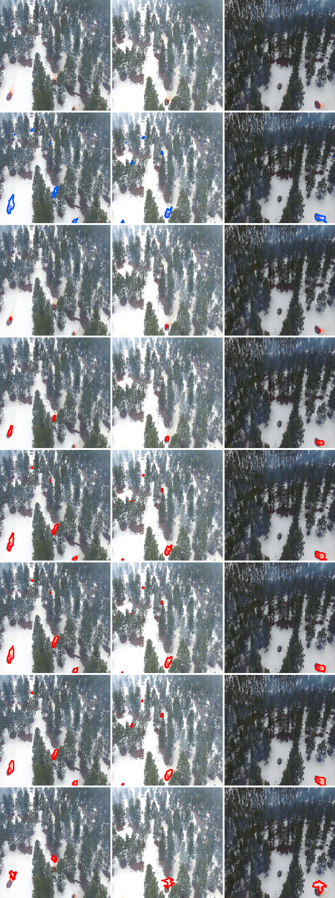
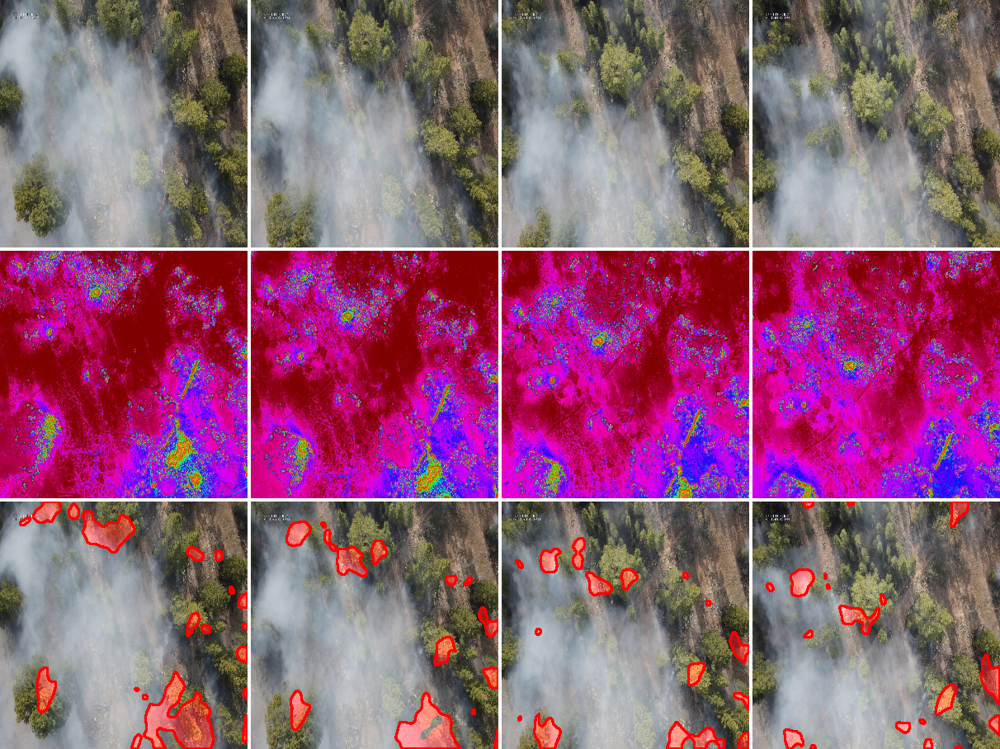
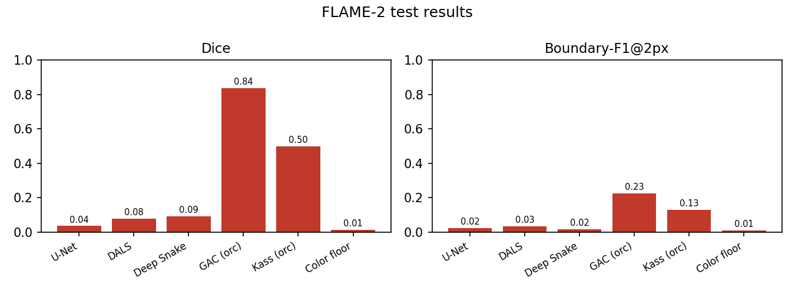
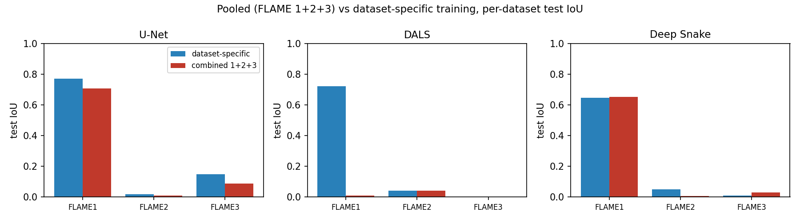

University of California, Los Angeles — CS 269
We study whether active contour (deformable) models can segment wildfire from aerial imagery, evaluating classical Snakes, Geodesic Active Contours (GAC), Deep Active Lesion Segmentation (DALS), and two variants of Deep Snake, against a convolutional U-Net baseline. We evaluate on three datasets of drone-captured imagery of prescribed burns: FLAME-1, FLAME-2, and FLAME-3. On FLAME-1, where flames are directly visible, most methods segment well, led by U-Net and DALS. On the smoke-obscured FLAME-2 and FLAME-3, no method recovers the fire from RGB, and only oracle-initialized contours, which are handed the ground-truth location, succeed. Pooling all three datasets does not help, and in fact degrades every method and collapses DALS entirely, because FLAME-1's visible-flame labels and FLAME-2/3's thermal-hot labels define incompatible targets. The difficulty is locating the fire when it is obscured.



